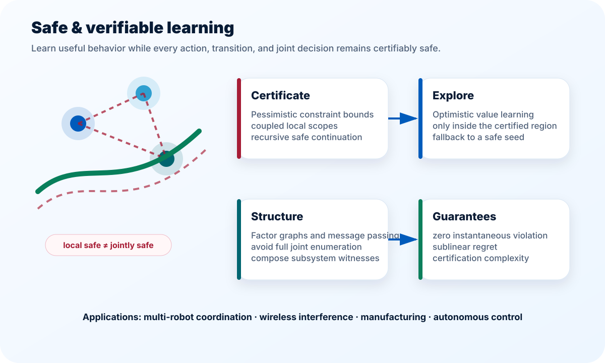
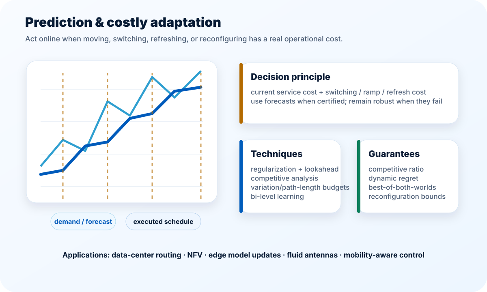
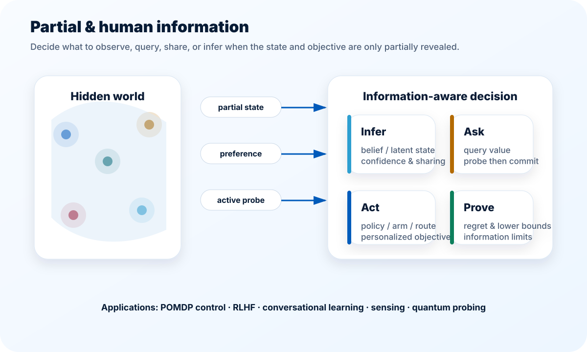
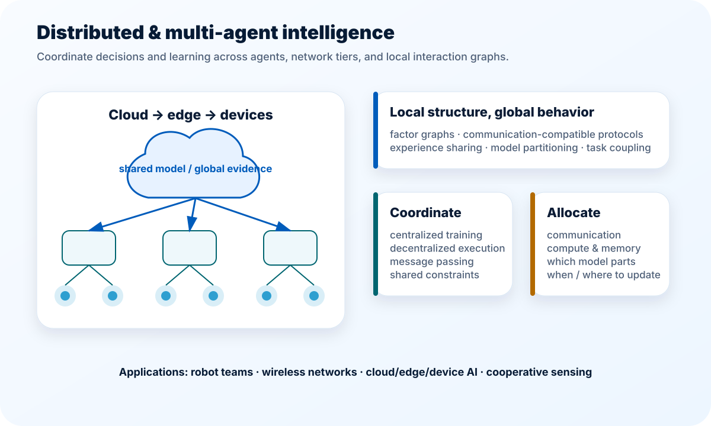
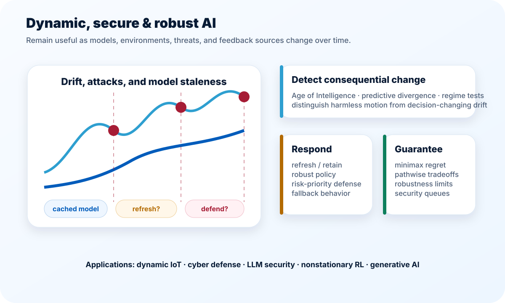

Intelligence that stays reliable
How should a system learn, coordinate, and adapt when information is incomplete, actions interact, and change has a cost?
I connect learning theory, optimization, and intelligent networked systems to answer that question with mathematical guarantees.

A clear question. A precise guarantee
Open a direction for its technical questions, methods, and representative papers.
Safe & Verifiable LearningHow can a learner improve while respecting safety at every step?

Instantaneous hard constraints change the learning problem: our algorithms certify the safety of an action before execution, including when agents’ actions interact. My work develops near-optimal safe reinforcement learning and extensions to non-convex feature spaces and coupled multi-agent decisions. The NeurIPS 2026 algorithm recombines local safety certificates and uses optimistic Bellman planning while retaining a known safe fallback.
Research Questions
- What can be learned from an initially certified safe seed?
- How do temporal viability and coupled constraints change exploration?
- Can local evidence certify a safe joint action efficiently?
Technical Approach
- Conservative confidence certificates and robust predecessor operators.
- Optimistic learning and planning inside certified safe action sets.
- Graph structure and compositional safety certification.
Scope: safety and regret guarantees depend on each model’s assumptions. The ICML and NeurIPS results establish safety with high probability during learning; the NeurIPS sublinear-regret guarantee additionally requires safety-margin and safe-information coverage conditions and exact communication-compatible planning. A safe fallback alone need not enable sublinear regret.
Representative Evidence
Prediction & Costly AdaptationWhen is a change worth its operational cost?

Moving a workload, changing a route, or refreshing a model consumes resources. I study online decisions with switching costs, ramp limits, uncertain forecasts, and coupled provisioning and scheduling.
Research Questions
- How much can prediction and lookahead improve performance?
- How should slow provisioning and fast scheduling work together?
- Can accurate forecasts improve performance while preserving guarantees when forecasts are inaccurate?
Technical Approach
- Competitive analysis and regularization with lookahead.
- Switching-aware bandits and reinforcement learning.
- Cross-level optimization and prediction-robust decisions.
In the studied adversarial bandit setting with switching costs, allowing two arms to be selected per round improves the achievable dependence of regret on the time horizon T from Θ(T2/3) to O(√T), without full-information feedback.
Representative Evidence
Partial & Human InformationWhat information makes efficient learning possible?

Neither the environment nor a person’s objective is always fully observed. I study the value and limits of selective state revelation, additional feedback, shared experience, and preference queries.
Research Questions
- When does partial state information make a partially observable Markov decision process (POMDP) easier to learn?
- What is the value of an extra probe or a shared trajectory?
- How can imperfect preferences support personalized decisions?
Technical Approach
- Regret upper and lower bounds under partial observability.
- Active probing and proactive conversational queries.
- Certified experience pooling and information-theoretic limits.
The IEEE TIT result establishes worst-case hardness and identifies structured subclasses that admit efficient learning with partial online state information.
Representative Evidence
Distributed & Multi-Agent IntelligenceHow can local decisions produce coordinated intelligence?

Networked intelligence spans interacting agents, cloud platforms, edge servers, and end devices. I study how to coordinate learning and control when communication, computation, and local observations are limited.
Research Questions
- How can agents coordinate safely using local information?
- Which models or experiences are worth sharing across tasks?
- When and where should a system update its intelligence?
Technical Approach
- Local interaction graphs and structured planning.
- Decision-aware model freshness and synchronization.
- Joint communication, computation, and resource control.
Looking ahead: cloud–edge–device foundation models and selective observation in multi-agent POMDPs are active research directions, rather than demonstrated deployments.
Representative Evidence
Dynamic, Secure & Robust AIWhat stays reliable when conditions and threats change?

Changing workloads, stale models, adversarial transitions, and evolving attack surfaces require decisions that remain useful after conditions shift.
Research Questions
- Which changes matter for downstream decisions?
- When should a learner refresh, switch, or reallocate defense?
- Which robustness guarantees require additional information?
Technical Approach
- Variation budgets, minimax regret, and pathwise analysis.
- Decision-aware model synchronization using Age of Intelligence (AoInt), with certificates based on Kullback–Leibler (KL) divergence or parameter changes.
- Queueing and risk dynamics for adaptive defense.
Evidence spans published/accepted learning results and current manuscripts. The dynamic attack-surface work remains a submission; emerging security applications are research goals.
Representative Evidence
Find the connections
Browse current projects or inspect the mathematical tools behind them.
Interactive Project Atlas16 projects and research lines · filter by direction or search a topic
Status labels distinguish accepted/published work from active projects and manuscripts. Open a project to see its core idea, methods, and related work.
Mathematical ToolkitPerformance, uncertainty, sequential decisions, information, and coordination
| Lens | Tools and measures |
|---|---|
| Performance | Regret, competitive ratio, constraint violation, refresh cost, and decision-aware freshness. |
| Uncertainty | Confidence sets, concentration inequalities, robust optimization, and pessimistic certification. |
| Sequential decisions | Bellman recursion, safe predecessor operators, variation budgets, and switching dynamics. |
| Information | POMDPs, active probing, preference queries, certified sharing, and information-theoretic lower bounds. |
| Coordination | Factor graphs, local interaction scopes, decentralized execution, and cross-level optimization. |
Turn practical constraints into research questions
I welcome conversations about mathematically grounded learning, optimization, and intelligent systems.